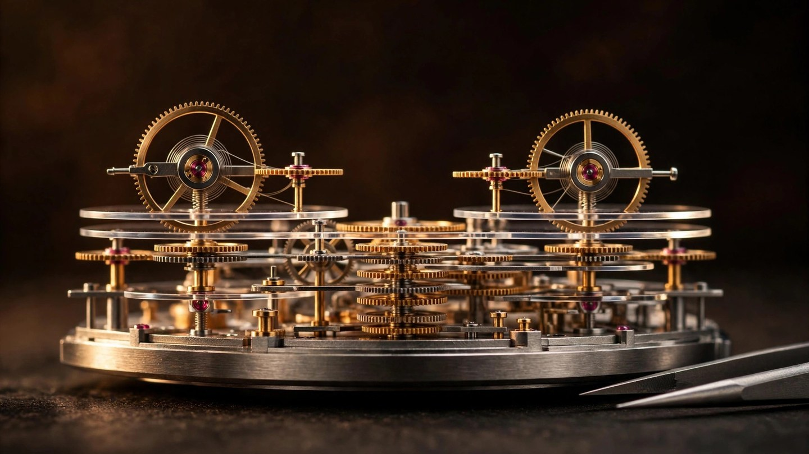

Luck, Disassembled: Chaykin's ThinKing Mystery Turns a 1.65mm Record Into a Repeatable Machine
Geneva Watch Days 2026 closed with the thinness race's strangest competitor back at center stage. The ThinKing's number is unchanged at 1.65 millimeters. Everything holding that number up has been redesigned: a revised calibre, a mystery indication, and a production process built to survive a watchmaker's bench twelve times over.

Nobody expected the ThinKing to become a product. In 2024, Konstantin Chaykin, the Russian independent best known for watches with cartoon faces, built a 1.65mm mechanical watch and aimed it squarely at a record the Swiss and Italian establishment treated as settled property. It worked. That prototype undercut Bvlgari's Octo Finissimo Ultra COSC at 1.70mm, Richard Mille's RM UP-01 Ferrari at 1.75mm, and Piaget's Altiplano Ultimate Concept at 2.00mm, and the final prototype went on to auction at Phillips in Geneva. Then, at Geneva Watch Days 2026, which ran September 2 to 6 with a record 71 brands, the ThinKing was by consensus the fair's engineering story once again.
But not as a record: the record is two years old. What arrived in Geneva was the ThinKing Mystery: the limited production version, twelve pieces, same 1.65mm thickness, and a caliber revised in almost every detail that matters. Chaykin's own framing, in the manufacture's technical documentation, is the thesis of this whole project:
"For me, this isn't just luck. It's not a coin that happened to land on its edge, but a complete understanding of a process capable of reproducing an unprecedented thinness once achieved."
Records are press releases. Repeatability is engineering. Far more interesting than the number is the list of things Chaykin had to redesign to make it happen twelve times instead of once, because a one-off prototype can survive luck, while a production run has to survive selective assembly, hand-fitting, extended final checks, and a watchmaker who must, in the brand's own words, feel both the metal and the tool with absolute precision, since even a micron-level deviation can destabilize the movement.
Delete the crown, delete the layers
Like every serious ultra-thin project of the last decade, the ThinKing erases the boundary between case and movement. Calibre K.23-3.1, the revised in-house movement, uses the caseback as its mainplate: the case is a load-bearing part of the caliber, and the gear train is arranged across two levels to kill vertical stacking. Bvlgari did the same trick on the Octo Finissimo Ultra. Richard Mille did it on the UP-01. Extreme thinness now has a shared grammar across the industry. In Chaykin's hands, the vocabulary is something else entirely.
No crown. This is the part collectors will argue about. Chaykin rejected a conventional crown from the outset: it would add thickness and, as the brand puts it, visually weigh down the silhouette. Winding and time-setting happen through two external tools. First, a carbon winding box, 47 by 43 by 9.2 millimeters and 30 grams, with 112 components including a safety reversing clutch; you drop the watch inside, close the lid, and adjust via two wheels protruding from the housing. Second, a slim stainless-steel key, 94mm long, that fits into a dedicated slot on the caseback. Both carry safety mechanisms that prevent overwinding. Honestly, this is a collector's machine with external dependencies, not a daily wearer. And there is a small piece of poetry hiding in the spec sheet. That winding box measures 9.2mm thick, which is five and a half times thicker than the watch it winds. Somewhere in Geneva there is a carrying case that dwarfs its own treasure, and that tells you everything about what this project optimizes for.
Two balances, one plane
Calibre K.23-3.1's signature is its balance assembly: two wheels laid out in a single plane, their rims interlocked through teeth. One wheel governs the frequency and isochronism of the oscillations. Its partner, fitted with a roller, acts as the impulse-jewel plate and drives the pallet fork. It is a patented solution, and the logic is pure packaging: a conventional balance stack costs vertical height the movement cannot spend, so the jobs of timing and impulse get split across two coupled wheels instead of one. Chaykin also avoided ball bearings entirely, which he considers unreliable for this duty; the movement runs on classic jewelled pivots, 54 of them, the same philosophy the 2024 prototype's K.23-0 applied with its 51 jewels.
Chaykin applies the same doctrine of subtraction to the barrel. A single ultra-thin barrel delivers 38 hours of reserve, up from 32 in the prototype, with no traditional upper cover at all: the cover's job is performed by the upper bridge, which has been reinforced with stiffening ribs. And the barrel arbor is designed as an overrunning clutch running on tungsten carbide balls. Stop and read that again. Tungsten carbide, the material of cutting tools and armor penetrators, inside a mainspring arbor, because at these clearances a conventional click is a liability. This is the kind of detail that separates a thin watch from a thinness project.
Mystery, literally
Then there is the dial, if the word still applies. Hours and minutes live on two sapphire discs, each 10.6mm in diameter and 0.2mm thick, visible through four sapphire crystals. No hands. No crossbars. Chaykin's famous Joker "eyes" are still there, but they are now fully transparent, the indications floating in space like something a stage magician would be proud of. That is not an accident; it is lineage.
This mystery indication is not decoration; it is a tolerance solution wearing an illusionist's cape. In the previous construction, a lateral drive spun wheels mounted on a central axis, which meant both axial and radial runout could appear as they rotated. In the revised version, the lateral drive turns solid sapphire discs instead, and a solid disc structurally eliminates axial runout by its geometry. Each disc is then guided by three rollers placed around its perimeter, bringing radial runout close to zero while, the brand claims, reducing energy losses from the mainspring barrel. Chaykin cites his 2007 Mystery 1000 Jewels as the inspiration, a piece built as a tribute to the 19th-century illusionist and watchmaker Jean-Eugène Robert-Houdin, whose famous table clock drove a single hand on a transparent disc that seemed to float in midair. A stage trick from the 1800s, rebuilt as a runout-elimination strategy for a 1.65mm watch. Nobody else in Geneva is working this way.
The case as a manufacturing process
Here is the part that separates the ThinKing Mystery from every other thinness project: the process language around it. Around 40 routing checkpoints process the case alone, a scale the manufacture says is more typical of aerospace engineering than classical watchmaking, with every parameter recorded in internal documentation and verified against strict quality standards. For the case, Chaykin chose a high-strength, high-precision, fully nonmagnetic nickel alloy, heat-treated until its hardness and resistance to plastic deformation increase noticeably, which also means it fights back against the finishing tools. Perlage and straight graining cover the bridges and mainplate, the wheels get circular graining, and every bevel is hand-cut and mirror-polished, because at component thicknesses where an incautious touch introduces a bend, finishing without destroying the part is the entire craft. Anyone can mill thin. Finishing thin without destroying it is the hard part, and it is the part Chaykin's documentation dwells on longest.
On performance, the honest cost is in the accuracy specification: minus 15 to plus 20 seconds per day, honestly published. That is unremarkable, and the brand does not pretend otherwise. A standard-grade ETA will regulate better. Nobody is buying a 1.65mm watch to win a chronometry trial; the number that matters here is 284, the component count, up from 204 in the prototype, and 12.1 grams, the weight of the watch without its strap.
A paragraph of its own for the strap, because it is doing structural work. A 1.65mm watch is more susceptible to shock-induced damage than any normal watch, so the strap is a patented system: leather with resilient titanium stiffeners and elastic inserts, engineered to take torsional stress away from the case and dampen shocks before they reach it. When the strap is part of the shock system, you have stopped designing a watch and started designing a mechanism with a wrist interface. I mean that as a compliment. It is also the detail that makes the whole project legible: every subsystem, even the leather, exists to defend the 1.65 millimeters.
The race, honestly scored
So where does this leave the thinness race? Bvlgari owns the industrial end of it: eight records, a COSC-certified 1.70mm Ultra, the discipline of a factory that treats thinness as a product line. Richard Mille owns the spectacle end: the 1.75mm UP-01 Ferrari, a monocoque lab experiment that cost roughly 1.8 million dollars and proved a point about materials science. Piaget's Altiplano Ultimate Concept holds 2.00mm and makes the whole contest look almost reasonable by comparison. Chaykin's 0.05mm margin over Bvlgari is not the story. What matters is that the margin was achieved with a watchmaker's vocabulary rather than a laboratory's: gears cut on gear rims, carbide balls in an arbor, a magician's trick solving a runout problem, perlage on parts you need tweezers and courage to touch. In a race the big maisons assumed required their factories, an independent with a hundred-plus patents walked in with workshop solutions and won.
Which is not to say the project is beyond criticism. Setting the time means finding the winding key first, a tool you will absolutely lose. No water resistance rating appears anywhere in the manufacture's technical documentation, which for a wristwatch in 2026 is a statement in itself. Minus 15 to plus 20 seconds per day is the price of physics at 18,000 vibrations per hour with a single thin barrel. And twelve pieces, allocated by closed review at CHF 400,000 excluding taxes per SJX's reporting, makes this a grail rather than a product line. Fine. Nobody promised a field watch.
What the number leaves behind
Chaykin's other quote, the one that matters more than the record, goes like this:
"I can keep pushing for ever smaller fractions of a millimetre, but at this stage something else matters more to me: making 1.65 mm a robust, repeatable construction."
That is the sentence the whole industry should underline. Below roughly two millimeters, the thinness race stopped being about smaller numbers and became a contest of engineering religions. Bvlgari's is industrial miniaturization. Richard Mille's is materials science as theater. Chaykin's is the watchmaker's workshop, weaponized, and the ThinKing Mystery is its manifesto: a record converted into a process, a one-off converted into twelve watches, and a magician's trick converted into a tolerance strategy. 1.65 millimeters was the proof. What comes out of the workshop next is someone else's problem to predict, and Chaykin's own documentation says the found solutions are expected to evolve into new variations and complications. Never mind the number; the process is the story, and the process, unlike the record, can be built twice.
| Spec | Konstantin Chaykin ThinKing Mystery |
|---|---|
| Case | 41mm, high-strength high-precision nonmagnetic nickel alloy, 1.65mm thick, ~40 routing checkpoints in manufacture |
| Weight / components | 12.1 g (without strap); 284 components |
| Calibre | K.23-3.1, in-house, manual key winding; movement integrated into case, caseback serves as mainplate; 54 jewels |
| Balance | Dual balance with toothed coupling (patented), single plane; 18,000 vph; Swiss lever escapement |
| Barrel | Single ultra-thin barrel, no upper cover (bridge with stiffening ribs); arbor as overrunning clutch with tungsten carbide balls; 38 h reserve |
| Indication | "Mystery" hours and minutes on two sapphire discs (10.6mm dia, 0.2mm thick) via lateral drive and three guide rollers per disc; four sapphire display crystals (0.3mm thick) |
| Accuracy | -15/+20 seconds per day (manufacture spec) |
| Winding | No crown; carbon winding box (47 x 43 x 9.2mm, 30 g, 112 components, safety reversing clutch) or 94mm steel key; both with anti-overwind safety |
| Strap | Leather with resilient titanium stiffeners and elastic inserts (patented); part of the shock-protection system |
| Water resistance | No rating claimed in manufacture documentation |
| Edition | 12 pieces, allocation by closed review; CHF 400,000 excluding taxes (per SJX) |
| Finishing | Perlage and straight graining on bridges/mainplate, circular graining on wheels, hand-cut mirror-polished bevels |
Facts above come primarily from Konstantin Chaykin's own ThinKing Mystery technical documentation. Prototype details for 2024 (40mm case, 13.3 g, calibre K.23-0, 204 components, 51 jewels, 32-hour reserve) come from Hodinkee's and SJX's 2024 coverage; the Phillips Geneva auction of the final prototype is documented by masterhorologer; the CHF 400,000 price and 12-piece production run are reported by SJX and confirmed in the brand's materials; the CHF 508,000 Phillips result and the ~$1.8M RM UP-01 figure are reported in Hodinkee's interview coverage; the 1.70/1.75/2.00mm competitive figures are from WristReview's thinness-race coverage; and the Geneva Watch Days 2026 "story of the fair" assessment is from Prestige's show roundup. My own analysis, not the manufacture's claims: the repeatability framing, the engineering-religion read, and the winding-box poetry. I have not handled the watch, and neither have most of the people writing about it: twelve pieces do not circulate. What circulates is the documentation, the patents, and a number that keeps refusing to get smaller, because the interesting work moved somewhere else.